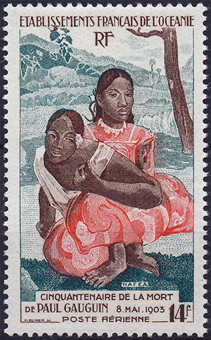
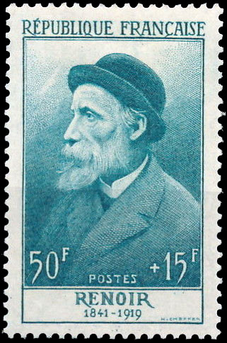
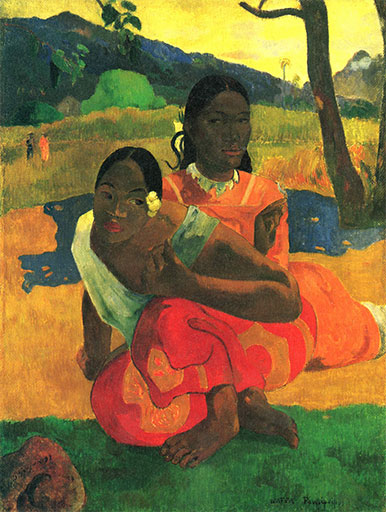
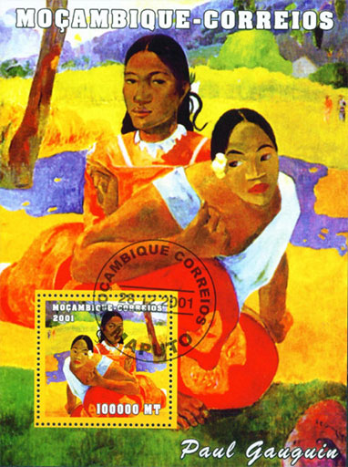
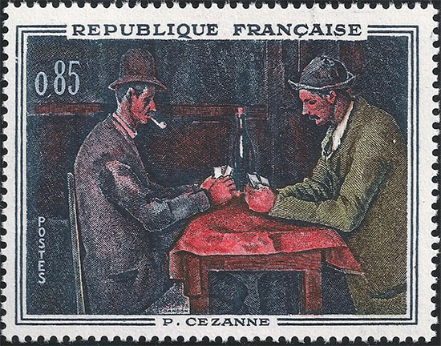

NAFEA FAA IPOIPO?
A few days ago I finally became the happy owner of a stamp that I wanted to have in my collection about 50 years ago, when due to circumstances this wasn't possible.The stamp in question is a reproduction of the renown oil painting "When will you marry? (Tahitian: Nafea faa ipoipo?, French: Quand te maries-tu ?) from 1892 by the French Post-Impressionist artist Eugène Henri Paul Gauguin.
Gauguin traveled to Tahiti for the first time in 1891. He never learned to speak the Tahitian language well and generally left a very bad impression about himself there, which lasted very long. The painting "When will you marry?" shows, however, that his art evolved consistently in dealing with the foreign. He came close to the native women and in his paintings he placed them in the wild, naked or dressed in traditional Tahitian clothes. Source The painting is on permanent display at the Kunstmuseum Basel, Switzerland.
The stamp was issued on September 24, 1953 by the French Polynesia, Scott C21, and commemorates the 50th death anniversary of Gauguin. It was rather expensive already 50 years ago, when a saw it for the first time in the catalog Yvert. Due to the popularity of its topics, it is even more expensive now but I could get it at an Internet auction for a quite reasonable price. Shown below on the left, it has a trace of hinge (MH), which doesn't bother me, because I'm much more interested in the image on the stamp than in the perfect shining of the gum on its back.


Of course, when compared with the original painting, the stamp colors are far away from the fine nuances of the original, displayed below. The stamp nevertheless impresses by the quality of its engraving and printing, and it is a tidbit for any art on stamp collector.

The original paintingPlease consider that this stamp was issued 60 years ago, when the color printing was still in its beginning and when most of the stamps where still printed in nuances of only one color, like the (excellent) portrait of another French painter, Pierre - Auguste Renoir, a contemporary of Gauguin. This stamp was issued by France on June 11, 1955 (Scott B299, the last stamp of a set of 6), therefore two years later than the Oceania - Polynesia Nafea stamp. Actually, I bought this stamp during the same auction, and it is also MH. I display it next to the Nafea one, on its right, to see better the difference in printing technologies.

Mozambique, colored label, 2001Just for comparison, I show above a contemporary souvenir sheet (S/S) that is dedicated the same painting. Issued by Mozambique in 2001, this S/S is part of a set named Paintings, and numbers not less than 23 sheetlets of 9 individual stamps, plus 25 S/S, having a total catalogue value of Eur 480.00 in Michel 2014 (Mi # 1986 - 2150; Block # 94 - 118). My Scott 2009 lists only 9 sheetlets and 25 S/S, # 1480 - 1488 and # 1489 - 1513; total value slightly over US $200.
I profoundly dislike this Mozambican S/S because of its heavily changed colors, its flipped background and its affiliation to an abusive set (one among many recently issued by this country or, more exactly, by one of the agencies that were then working for it). I doubt that this issue was useful and used for the postal traffic of a country that was still recovering from a bloody civil war. Caveat emptor!
Update 2015. A Swiss family foundation sold Nafea for $300 Million to a group of state museums in Qatar. This price is by roughly $50 millions higher than the record price paid by the same group for the painting "The Card Players" by Paul Cezanne. Nafea was exhibited by the Kunstmuseum Basel for about a half of the past century.
Below I show the previous price record holder, "The Card Players", France, 1961, Mi. 1374. Engraved by Gandon, this stamp shows the advances made by the stamp printing technology.

"The Card Players", by Paul Cezanne, 1961Link on this site: Paul Gauguin